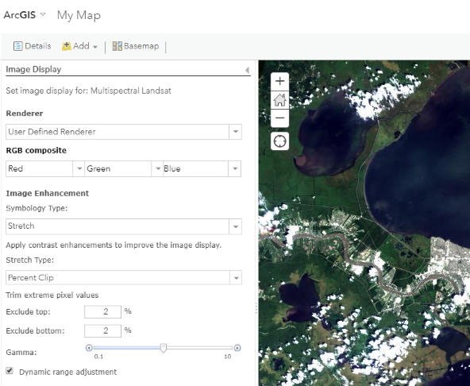

Lab Assignment 5
Imagery in Web GIS
In this assignment we will use ArcGIS Online to view multispectral satellite imagery and create a web app that compares images from different dates to highlight landcover change.
Data
Images from the Landsat series of satellites are available in the ArcGIS Online Living Atlas as a web service. Landsat satellites have provided imagery of Earth’s surface for more than 40 years. Currently, Landsat 8 captures the entire planet every 16 days at a resolution of 30 meters (each pixel in a Landsat 8 image represents a 30x30-meter square area). Landsat 8 images include data from 11 spectral bands–in addition to red, green, and blue bands for visible light, Landsat senses other parts of the electromagnetic spectrum such as infrared and thermal wavelengths.
See the Multispectral Landsat Item Details page for more information on the Landsat mission and the images it produces.
Process
Part 1: Create a map with imagery
- Go to the Map Viewer and click
New Map. - Click
Add>Browse Living Atlas Layersand search for “landsat”. - In the search results, click the name “Multispectral Landsat” and an information pane will appear showing the item details.
- Click the blue
Add to Mapbutton at the bottom of the information pane or click the plus sign in the “Multispectral Landsat” search result. - Click the back arrow in the search pane (not in your browser!) to view the contents pane again. There should be a new layer added to the map.
- Save the map as “Image Comparison”.
Part 2: Show true color
To display Landsat images in natural colors, you must set the Red, Green, and Blue outputs to Landsat bands 4, 3, and 2.
 - Pan to the Acadiana region of Louisiana, centered roughly on the area stretching between Lake Charles and Lafayette, LA. Zoom close enough to distinguish urban areas and agricultural fields (the map scale bar could be about 2 km to 10 km).
- In the contents pane, under the layer name “Multispectral Landsat”:
- Click the
Show Legendicon to see what bands are shown as red, green, and blue. - Click the
Show Tableicon to see the attribute table with image names and acquisition dates. - Click the
More Optionsicon (three blue dots) and on the menu clickImage Display.
- Click the
- In the image display pane, under
Renderer, selectUser Defined Renderer. - Under
RGB composite, there are three dropdown menus representing Red (left), Green (center), and Blue (right). Set them as:Red(band 4) in the Red dropdownGreen(band 3) in the Green dropdownBlue(band 2) in the Blue dropdown
- Under
Symbology TypeselectStretch. - Under
Stretch TypeselectPercent Clip. - Check the box for
Dynamic range adjustment. - Click
APPLY. Save.Part 3: Create a false color view
Multispectral imagery may contain data outside of the visible spectrum. You must choose colors to represent bands that normally cannot be seen by the human eye. Use the “5-4-3” combination to emphasize healthy vegetation.
- Click the
More Optionsicon and on the menu clickImage Display. - Change the
Image Displayoptions for this layer with the following bands for R-G-B (refer back to Part 2):NearInfrared(band 5) in the Red dropdownRed(band 4) in the Green dropdownGreen(band 3) in the Blue dropdown
- Click
APPLYto see the false colors change on the map. - Other common false color combinations:
- 6-5-2 (ArcGIS Online Landsat default)
- 7-5-3 (water is deep blue, healthy vegetation is bright green, bare ground and urban are brownish/reddish)
Save.Part 4: Filter images for certain dates and quality
- Click the
Filtericon on the Landsat layer and edit the existing filters to have the following conditions:Acquisition Date-is between-1/1/2019and12/31/2019Cloud Cover-is less than-0.2

- Click
APPLY FILTER. This will show images taken by the Landsat 8 satellite during 2019, if less than 20% of the image is covered by clouds. You might need to pan and zoom your map to a different location to get images that meet the filter criteria. Save.Part 5: Create a web app
- Click the
Sharebutton in the ArcGIS Online Map Viewer. - Check the box by
Everyone (public). - Click
Create a Web App. - Select the template category “Interpret Imagery” and choose the
Image Maskconfigurable app (see the app’s Item Details page). - Click
Create Web Appto confirm your selection. - Click
Doneto move on to configuring the app. - You may explore the tabs and try different settings.
- On the
Optionstab, for example, enable the export tool to allow users to save the result of their change detection analysis.

- On the
Imagerytab, use the image below as a guide for an app that highlights changes in crawfish/rice fields in different seasons.

- On the
- Click
Save. - Click
Launchto view your app.Part 6. Use your web app
- After launching your app, click the change detection tool.
- Select the layer and images to compare. See the settings below for detecting fields that were flooded in January but not in September. Note that a box is drawn around the area of interest to limit the analysis area.

- Click
Applyto run the change detection. A new layer is created showing areas with significant changes in the water coverage.

If you added the export tool to your app, you can save the change detection result to your Content or a file. The saved result could be further analyzed in GIS software, such as finding the total acres of farms that flood their fields seasonally.
Try it
Go back to your map in the Map Viewer and make a few changes. The changes will be reflected in the app (Part 5) automatically; you do not need to create a new app.
- Pan and zoom the map to an area you think would have interesting temporal variation in vegetation, water, or burned area.
- Edit the image layer’s
Image Displayto use a false color combination that you think is appropriate for your area. - Go to your app’s Item Details page and click
Configure App. Make any necessary changes to the settings for your new area, such as changing the title, theme, or allowing different indexes for analysis (Vegetation Index, Water Index, Burn Index, etc.). - Launch your app and use the change detection tool. Take a screenshot of the result to put into your app’s description on the Item Details page and use as the thumbnail.
- Fill in basic info on the Item Details page.
- Click
Edit Thumbnailand browse for the screenshot image you took. - Add a short description for the Summary.
- Add more details about the app for the Description. What layers does it contain and what does the app allow users to do? Insert the screenshot of the app’s analysis result.
- Specify terms of use (“None”).
- Add relevant tags to describe the app with a word or short phrase.
- Give credit where credit is due in
Credits (Attribution), e.g., data providers USGS, NASA, Esri.
- Click
Submit
- The URL to the Item Details page of your public web app. Example:
https://www.arcgis.com/home/item.html?id=ABC123